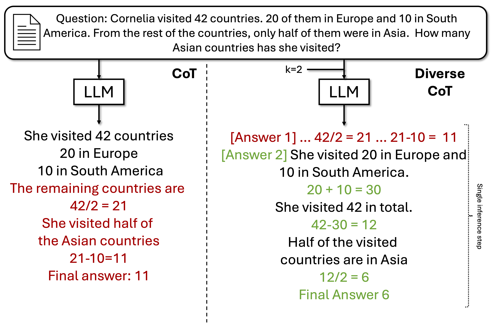
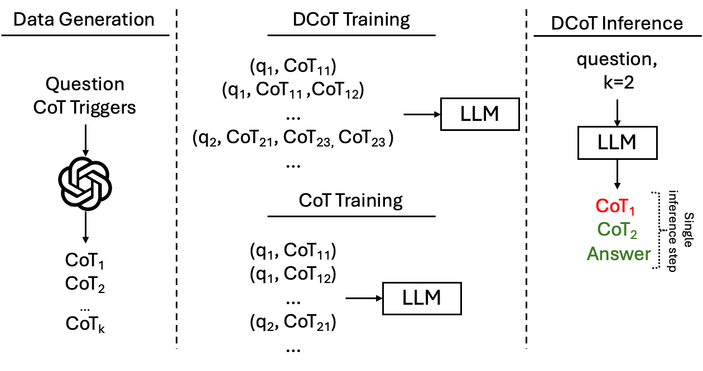

Requiring a large language model (LLM) to generate intermediary reasoning steps, known as Chain of Thought (CoT), has been shown to be an effective way of boosting performance. Previous approaches have focused on generating multiple independent CoTs, combining them through ensembling or other post-hoc strategies to enhance reasoning.
In this work, we introduce a novel approach where LLMs are fine-tuned to generate a sequence of Diverse Chains of Thought (DCoT) within a single inference step, which is fundamentally different from prior work that primarily operate on parallel CoT generations. DCoT allows LLMs to gain the ability to perform within-inference refinement of reasoning chains without requiring external feedback.
Through a rigorous set of experiments spanning a wide range of tasks that require various reasoning types, we show that fine-tuning on DCoT improves performance over the CoT baseline across model families and scales (1.3B to 70B). These improvements are particularly impactful for tasks with a large result state space, such as those involving numeric answers. Our work is also significant because both quantitative analyses and manual evaluations reveal the observed gains stem from the models' ability to refine an initial reasoning chain by generating a second, improved chain within the same inference step, demonstrating previously elusive self-improvement.


We instruction-tune LLMs to generate a sequence of diverse CoTs before selecting the final answer in a single inference step at inference time. To this end, we devise a DCoT instruction template, where we introduce a set of commands (in brackets) to request the number of CoTs to generate:
Prompt:[Question] Question [Options] Options [Number of answers] k Response:[Answer 1] CoT_1 [Answer 2] ... [Answer k] CoT_k [Final answer] answer
Similarly, to establish a comparable baseline, we instruction-tune the same LLMs using the more traditional CoT format. To ensure a fair comparison, we use the same reasoning chains for training. As shown in the figure above, each data point is composed of a question and a CoT, and a question may appear in more than one data point but with a different CoT. In this way, the model leverages CoT diversity at training time but, unlike in DCoT, it does not do so at inference time.
We use GPT 3.5 turbo in the zero-shot setting with multiple triggers, such as Let's think step by step to generate CoTs. For each question, we select four random CoT triggers. We limit the number of CoTs to four to ensure that the targets fit the context window of the LLMs.
| Method | Phi 1.5 (1.3B) | Phi 2 (2.7B) | LLaMA 7B | LLaMA 13B | LLaMA 70B |
|---|---|---|---|---|---|
| DCoT | 49.39 | 62.60 | 60.80 | 66.18 | 68.63 |
| CoT | 47.20 | 60.85 | 58.97 | 64.39 | 66.96 |
The table shows the average results of DCoT and CoT across 8 QA reasoning tasks. We observe that DCoT achieves consistent and significant performance gains compared to CoT across all LLM families and sizes.
The datasets are:
| Dataset | Reasoning Type |
|---|---|
| ARC | High-School Science |
| BGQA | Logic |
| CoinFlip | State-tracking |
| ConditionalQA | Conditional |
| GSM8K | Math |
| HotpotQA | Explicit multli-hop |
| LCC | Symbolic |
| Quartz | Qualitative relationships |
| StrategyQA | Implicit multi-hop |
| Method | Phi 1.5 | Phi 2 | LL. 7B | LL. 13B |
|---|---|---|---|---|
| CoT | 47.51±1.77 | 63.51±.71 | 59.30±.54 | 65.41±.91 |
| DCoT@1 | 47.87±1.71 | 63.91±2.58 | 61.28±.50 | 65.80±.44 |
| DCoT@2 | 48.63±.67 ↑ | 65.33±2.80 ↑ | 62.46±.45 ↑ | 67.30±.49 ↑ |
The table shows that a single revision (DCoT@2) consistently improves performance over both CoT and DCoT@1 across all models.
DCoT@1 has a similar performance to CoT, which shows that DCoT is a safe replace to CoT in regular instruction-tuning datasets.
Below are example prompts and model responses illustrating how CoTs are refined (within-inference) by DCoT. Text in orange indicates an error. Text in blue indicates the correction.
| Prompt | DCoT Response | Explanation |
|---|---|---|
|
Question: Take the last letters of each words in “Billie Paloma Tanner
Raul” and concatenate them. |
[Answer 1]
[Answer 2]
[Final answer]
earl
|
1st and 2nd CoTs are the same but the 1st CoT makes an error when generating the answer. 2nd CoT corrects that. |
|
Question: Cornelia likes to travel. She visited already 42 different
countries. 20 of them were in Europe and 10 in South America. From the rest of
the countries, only half of them were in Asia. How many Asian countries has
Cornelia visited? |
[Answer 1]
[Answer 2]
[Final answer]
6
|
2nd CoT shows a different reasoning pattern and yields the correct answer. |
@misc{puerto2024dcot,
title={Fine-Tuning on Diverse Reasoning Chains Drives Within-Inference CoT Refinement in LLMs},
author={Haritz Puerto and Tilek Chubakov and Xiaodan Zhu and Harish Tayyar Madabushi and Iryna Gurevych},
year={2024},
eprint={2407.03181},
archivePrefix={arXiv},
primaryClass={cs.CL},
url={https://arxiv.org/abs/2407.03181},
note={To appear in ACL 2025 Main Conference}
}